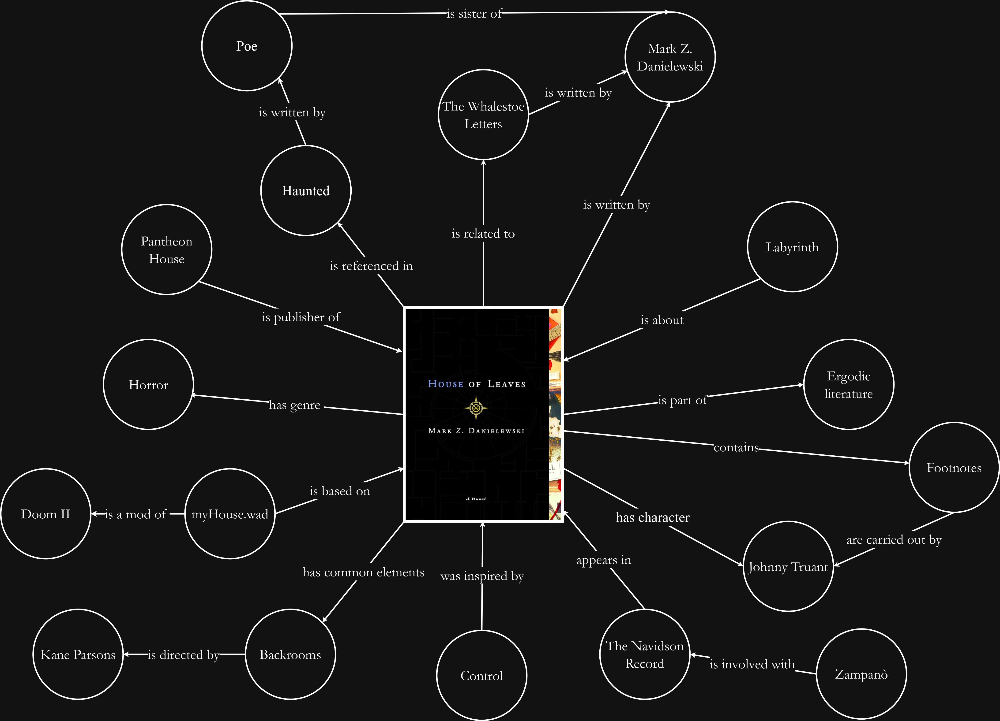
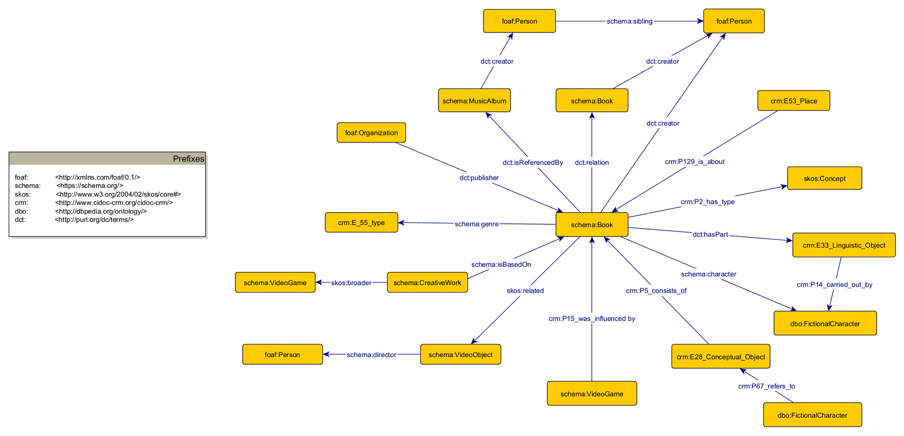

Overview
Developed for the course Information Science and Cultural Heritage at the University of Bologna, this project explores the experimental novel House of Leaves, by Mark Z. Danielewski, using Digital Humanities technologies.
The starting point is House of Leaves' Wikipedia article: relevant entities and their relations were extracted and represented in a theoretical model and then in a conceptual one. Some selected sections (namely the introdcution, "Companion Works", and "Legacy") were then annotated using TEI encoding. The project then focused on Knowledge Representation, transforming the TEI encoding into an HTML file and creating a small RDF dataset.
View the Wikipedia articleDomain Analysis
House of Leaves is a groundbreaking, experimental novel by author Mark Z. Danielewski, focusing on a report about a labyrinthine, shifting house and the family that inhabits it. The book combines an academic writing style, psychological horror and a convoluted layout that often forces readers to engage physically with the book, for instance by turning the book to read an upside-down chapter, or by reading through its reflection on a mirror. Its innovative storytelling and intricate narrative, along with its multiple layers of narration and characters, have made it a staple of the horror genre.
Its influence can be found in many recent works, spanning all forms of media: from films to other books, and even to custom video game maps, the book has influenced, whether consciously or not, a huge part of the horror landscape of the last two decades.
In order to mirror the vastness of the work, the project tried to vary as much as possible in selecting the entities, without being limited to the more direct relations to the book. Some of the selected entities include:
- Mark Z. Danielewski: the author of House of Leaves and its companion work, The Whalestoe Letters.
- Haunted: an album directly influenced by the book, by the author's sister
- The Whalestoe Letters: a small companion book to the main one
- Backrooms: a successful video series published on the web, born from an online post
- MyHouse.wad: a mod for the video game Doom II, focused on a shifting house
Knowledge Organization
The Knowledge Organization section required to illustrate the relations between the entities with a theoretical model and a concpetual one.

The theoretical model is a natural language representation of the selected entities and their relations.

The conceptual model reuses existing ontologies to map in a formal way the entities and their relations. Some of the reused ontologies include: FOAF, SKOS, CRM.
Knowledge Representation
In the Knowledge Representation phase, selected sections of the original Wikipedia article were annotated using TEI encoding. The document is encoded with semantic markup for persons, bibliography, places, organizations, dates, and concepts.
Afterwards, the TEI-encoded XML document is transformed into a readable HTML page using an XSLT stylesheet. This allows the user to visualize the annotated text and browse the identified entities in a more accessible way. Links to Wikidata were also provided to match the entities.
Lastly, a Python script was developed to automatically convert the semantic relationships defined in the TEI file into a small RDF dataset expressed in Turtle format. This process enables the representation of the domain as Linked Open Data and ensures interoperability.
View TEI encoding View HTML transformation View RDF datasetProject Files
All the files related to this project can be viewed together in the Github repository:
View Github